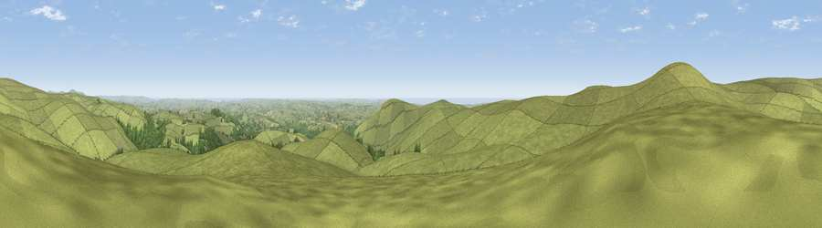

Viewpoint near Didworthy
#3028 in England · top 7% of its area beats it · near DidworthyThe view, rendered

A 360° render of this exact spot computed from the terrain model, tree cover and land cover — summer colours, afternoon light, calibrated against photographs of famous viewpoints. Real trees, hedges and buildings will differ in detail.
The panorama
Grey silhouette: terrain skyline in each direction (720 bearings, Earth curvature and refraction included). Dashed green: skyline with trees (+15 m) and buildings (+8 m) as obstacles. Blue strip: how far the ground is visible on each bearing.
Where the view opens
Wedge length = distance to the farthest visible ground on that bearing (vegetation-aware). Rings at 10, 25 and 50 km.
What fills the view
91% grassland · 5% woodland · 2% cropland · 2% water
Angular shares of the visible panorama (visual magnitude), not map area. Landscape diversity 0.17 (0–1 Shannon).
Key numbers
More beautiful places nearby
The staircase of upgrades: each row has a higher view potential than everything closer. Driving times are estimates from straight-line distance, calibrated against real road routing — check an actual route before setting out.
| Place | Direction | Drive | Score |
|---|---|---|---|
| Three Barrows | WNW · 1 km | ~3 min | 75.9 |
| Ugborough Beacon | S · 3 km | ~7 min | 79.5 |
| Western Beacon | S · 5 km | ~10 min | 81.9 |
| Viewpoint near Lee Moor | W · 10 km | ~20 min | 82.7 |
| Viewpoint near Hope | S · 23 km | ~38 min | 84.4 |
| Viewpoint near East Prawle | SSE · 28 km | ~44 min | 84.6 |
| High Peak | ENE · 50 km | ~71 min | 85.3 |
| Pencarrow Head | WSW · 52 km | ~74 min | 86.0 |
50.44281, -3.88323 · source: screening · position refined by local search. Computed location — check access rights before visiting.